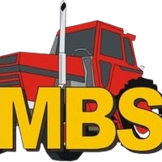
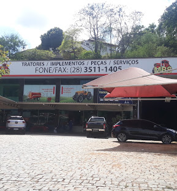

Manutenção, peças e locação de máquinas agrícolas em Cachoeiro de Itapemirim
Fale ConoscoHá mais de 24 anos atuando em Cachoeiro de Itapemirim, a MBS Tratores oferece manutenção, peças e locação de máquinas agrícolas com experiência e confiança.

Reparação e manutenção completa de tratores agrícolas.
Locação de retroescavadeira para obras e terrenos.
Locação de escavadeira hidráulica para grandes trabalhos.
Serviço completo de terraplanagem e nivelamento de terreno.
Peças e implementos agrícolas com qualidade garantida e melhor preço da região.
Endereço: Av. Doutor Aristides Campos, 493 - Gilberto Machado, Cachoeiro de Itapemirim - ES
Telefone fixo: (28) 3511-1405
Whatsapp:(28) 99985-6461
Entre em contato pelo Whatsapp